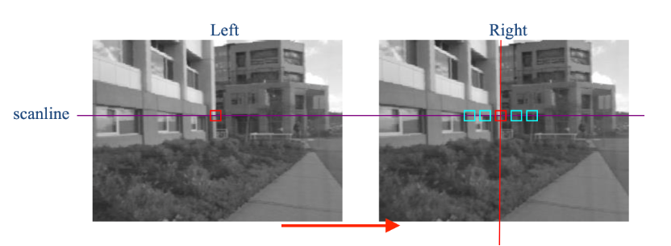
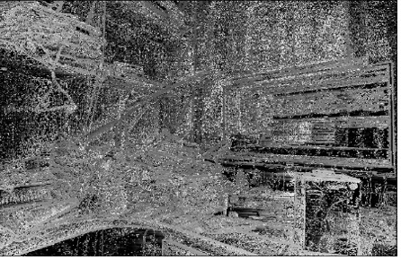

The objectives of the project were to explore the performance
difference of various stereo matching methods including Sum of Absolute
Differences, Sum of Squared Differences, Normalized Cross Correlation
and Semi-global matching (SGM), as well as the choosing of parameters
such as kernel size. Intel Realsense D455 RGB-D camera was used to
collect the stereo image pairs. The Intel Realsense RGB-D camera could
emit infrared ray to assist the depth estimation by adding extra
features to some surface without feature such as white walls.
Therefore, whether the infrared ray could help generate better depth
map will be tested and discussed.
Steps & Implementation
In general, the matching procedure could be executed as shown in the
flowchart in Figure 2. The idea was to find the same point in the real
world in both left and right image. Usually, as shown in Figure 1, a
kernel (a square area) was firstly chosen in one image, for example,
the left image. Then, starting from the same position as the kernel in
the left image, a horizontally sliding kernel was created in the right
image and the cost between the kernel in the left image and the sliding
kernel in the right image was calculated. The cost function could be
modified. The kernel position with the least cost in the sliding range,
which could also be modified, in the right image was considered as a
match to the left kernel. The pixel distance between the position of
the left kernel and the one in the right image was the disparity. As
the closer the object is, the larger the disparity is. The sliding
range decided the closest distance that the depth map could be
generated.

MatchingFlowchart
Three different cost functions, which were SAD, SSD and NCC, were
implemented and the performance for each cost function will be
discussed in the next section.
Semi-global Matching (SGM) - Census Transform & Hamming distance
The previous methods used the sum of the cost for each pixel in the
kernel between the left and right image to find the best match. In
another words, the sum of the pixel value difference was used as the
feature that the matching process referred to.
For the scene with little illumination change and with relatively high
number of features, SAD, SSD and NCC may find pretty good matches.
However, if the illumination condition was different in two images, the
matching will be greatly influenced because the mean pixel value will
be different even if for the same part of the image.
Census transform used the pixel difference between the certain pixel
with the adjacent pixels as the feature for matching. Therefore, it
could be considered the pattern of changing for each pixel was used. As
shown in Figure 3, the census transform was to compare the value of the
center pixel and the pixels around it. If the adjacent pixel was
larger, encode ‘1’ while the center pixel was larger, encode ‘0’. Then,
the binary code series of the kernel in left and right images did ‘XOR’
operation, the output was called Hamming distance, which could be
considered as cost. The best match should have the smallest Hamming
distance.
Hamming Cost
Results
Three aforementioned cost functions were tested with different size of
kernels. Moreover, as Intel Realsense RGB-D camera, which could
actively emit infrared ray with a fixed pattern to assist on-chip
stereo matching on the camera, was used to collect stereo images, the
stereo matching performance with or without the assistance of infrared
ray was tested and compared as well. The collected images were
self-rectified before output from the camera. Therefore, the images
were used directly for stereo matching. The resolutions of the images
for matching were 848*480. Figure 4 and Figure 5 were the image
captured without infrared ray while Figure 6 and Figure 7 were the
image captured with infrared ray on. The largest disparity was set to
100 for completed depth calculation.
Without Infrared Laser:
Left image without laserRight image without laser
SAD
SSD
NCC
3

7
11
15
19
23
27
31
With Infrared Laser:
Left image with laserRight image with laser
SAD
SSD
NCC
3
7
11
15
19
23
27
31
As the figures in Table 1 and 2 shown, for both laser-assisted and normal
images, the depth map generated by kernels with smaller sizes were noisier
and with a greater number of pixels that failed to be matched. However, it
could be observed that although the depth maps generated with large kernels
were smoother, they lost some of the details of the objects in the image
such as the sharpness of their shapes. The reason for this phenomenon might
be that small kernels will have large changes in values when sliding,
therefore, it was relatively easy to match to a random area that was
similar to the correct target. On the contrary, large kernels were
relatively consistent in values, so that large kernels may not reflect
small details but will be more likely to be smooth. Among three different
cost functions, it was apparent that the normalized cross correlation (NCC)
gave matching results with less noise and more valid matching pixels than
the other two methods did. By using NCC, the improvement was mainly in the
area that was with little strong features. In the images generated by the
non-laser image pairs, the depth maps generated by NCC cost function were
more obviously better than the other two cost functions.
Compared the results obtained by the images with infrared lasers with the
ones without the assistance of the infrared lasers, it was obvious that the
laser-assisted results were much more detailed, for example, sharp edges on
objects, and with less failed pixels especially in the area that was lack
of features. In the three tested methods, only NCC could give reasonable
matching results without the assistance of infrared ray.
Table 3. The duration for calculating the matching (unit: seconds)
3
7
11
15
19
23
27
31
SAD
101.576
101.225
101.731
103.691
104.877
107.071
110.637
112.446
SSD
138.111
141.071
144.934
151.417
160.569
167.141
189.495
205.365
NCC
255.229
273.032
259.001
271.406
278.993
299.047
324.951
336.753
As for the time cost to calculate the matching, SAD cost function took the
shortest time to calculate the matching and NCC was the most time-consuming
one. Moreover, the larger the kernel was, the slower the calculation was.
This trend was applied to all three methods because larger kernels simply
led to more computation for each round of cost calculation.
These three methods all cost more than one minute to generate only one
depth map, which was too slow for some application like robotic vision that
needed very high real-time performance. One possible solution was to used
FPGA to calculate the depth because the calculation in stereo matching can
be executed in parallel. It was speculated that Intel Realsnese RGB-D
camera used FPGA inside the camera to do the stereo matching.
Cencus Transform ResultHamming CostSGM Result
It could be observed that the depth was changing smoothly on surfaces and
was sharp on the edges. The scene was naturally presented, and objects
could be clearly recognized in the depth map.
Conclusion
In conclusion, the window-based stereo matching performance with three
different cost functions, which were SAD, SSD and NCC, was discussed. It
was found that NCC had the best matching performance while it took the
longest time to compute. Moreover, the projection of infrared ray was
proved to be effective to generate depth maps with higher quality because
it could add extra features to the field of view so that the matching
algorithms could find the correct match with less effort, especially for
the area with little strong features. Additionally, the matching algorithm
needed to be implemented on specially designed FPGA for real-time
operation.